Abstract
Visual representations are largely developed for understanding, yet what makes them useful for generation remains unclear. We study this question in pixel diffusion transformers and uncover two key insights. First, better representation quality does not necessarily translate into greater generative utility, as externally aligned semantics can be progressively lost during pixel synthesis. Second, architectural separation with specialized pixel decoders mainly redistributes semantic and spatial modeling, without necessarily yielding representations better suited to generation. These insights suggest that a useful generative representation must be both properly formed and actively exploited. Motivated by these insights, we introduce Representation Guidance (RG), which directly forms and exploits internal representations while retaining a plain Transformer architecture. A low-dimensional bottleneck forces generation-relevant information into a compact representation, which is then explicitly used to guide decoder generation by modifying the flow-matching target according to its induced prediction offset. RG learns clearer semantic and spatial structure while scaling efficiently in both parameters and computation. On ImageNet $256\times256$, RG-L/16 with only 459M parameters outperforms substantially larger pixel diffusion transformers, while RG-XL/16 achieves an FID of 1.55. RG further reaches an FID of 1.74 at $512\times512$ and extends to text-to-image generation, achieving 0.89 on GenEval and 87.1 on DPG-Bench.
Motivation
Why pixel space and a plain Transformer?
Representation learning and image synthesis take place end-to-end from raw pixels, rather than through a representation space predefined by an external autoencoder.
A plain Transformer provides a simple setting for examining how internal representations emerge and interact with pixel synthesis.
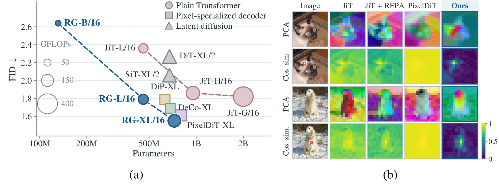
Our RG enables efficient scaling and better internal representations.
(a) RG scales consistently from B to XL. It achieves lower FID with fewer parameters and FLOPs than plain-Transformer JiT baselines, while also outperforming pixel-specialized decoders at lower complexity.
(b) RG learns clearer spatial structure and more localized semantic correspondence.
Scale a plain Transformer for end-to-end pixel diffusion, without specialized architectural design, such that strong internal representations both emerge and are actively exploited for generation.
Two Key Insights
Our analysis of this setting reveals two key insights.
1Better representation quality does not necessarily translate into greater generative utility.
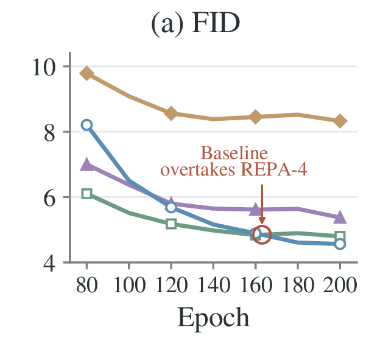
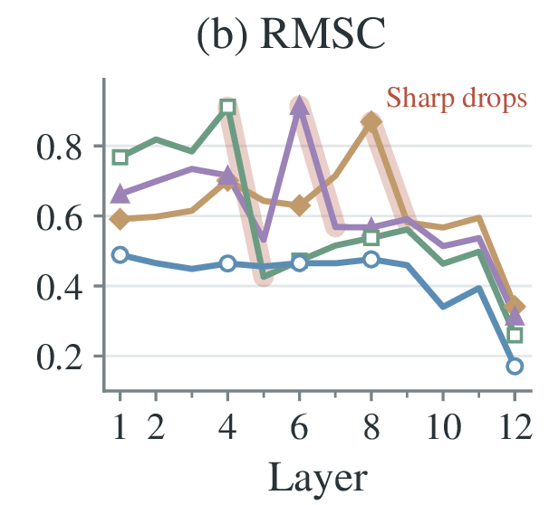
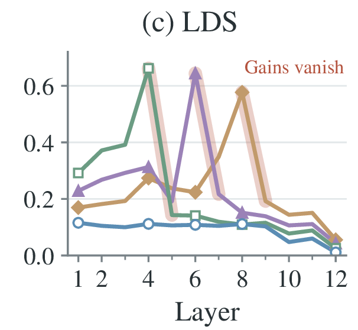
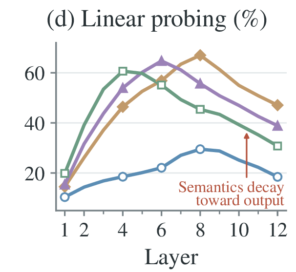
- Baseline
- REPA-4
- REPA-6
- REPA-8
2Architectural separation mainly redistributes semantic and spatial modeling rather than yielding a representation better suited to generation.
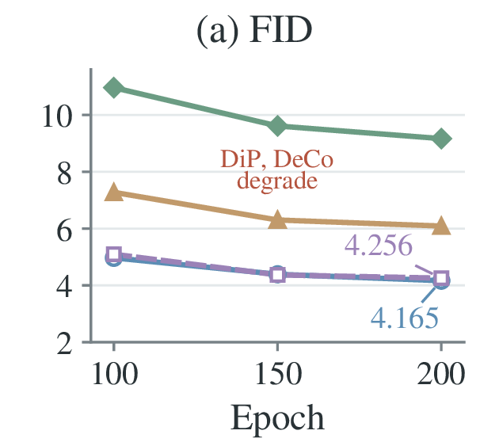
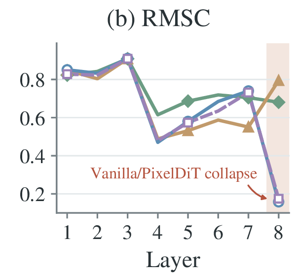
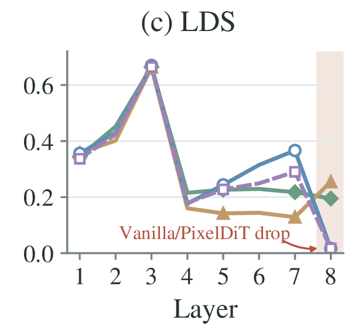
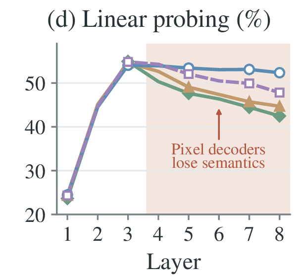
- Vanilla
- PixelDiT
- DiP
- DeCo
Together, these findings motivate controlling both how the representation is formed during generation and how it is used by subsequent synthesis. A useful generative representation must be both properly formed and actively exploited.
Based on these insights, we introduce Representation Guidance (RG).
Representation Guidance
The bottleneck and guidance play complementary roles: the former governs how the representation is formed, while the latter ensures that generation actually uses it.
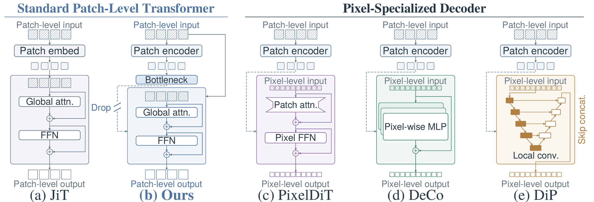
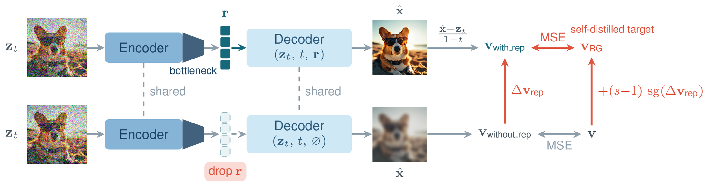
- Implicit latent space. A low-dimensional bottleneck between the encoder and decoder forms a compact implicit latent space, encouraging generation-relevant information to be organized into a concise internal representation.
- Representation guidance. We compare decoder predictions with and without the representation and use the resulting representation-induced velocity offset to modify the flow-matching target. This increases the model's dependence on the representation, while gradients through it simultaneously shape the encoder toward information useful for synthesis.
RG also shares a core principle with self-distillation in self-supervised learning: the representation is bootstrapped from targets derived from the model's own predictions. Whereas self-distillation sharpens the teacher distribution to induce discriminative features, RG sharpens the velocity target along the representation-induced offset, which compels the representation to encode the semantic and spatial structure required for generation.
Results
Without introducing specialized pixel modules, RG achieves a substantially stronger parameter–quality and compute–quality trade-off, scales consistently with model size, and develops markedly clearer semantic and spatial organization in its internal representations.
Faster convergence
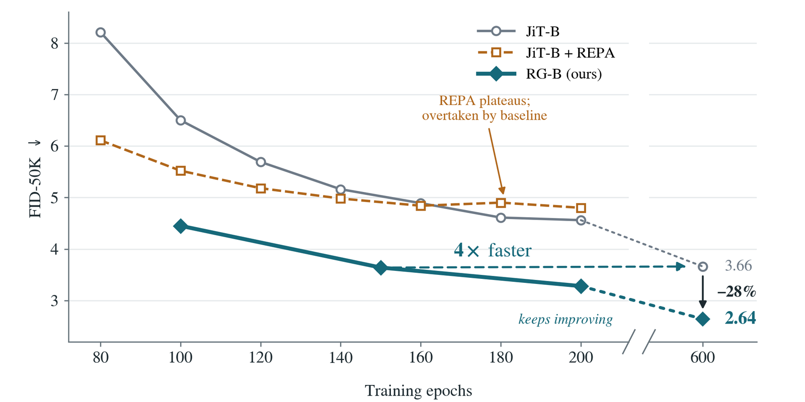
Layer-wise representations
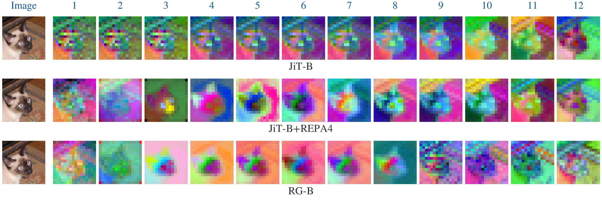
ImageNet $256\times256$
| Method | Epoch | Params | Pre-training | gFID↓ | IS↑ | Precision↑ | Recall↑ |
|---|---|---|---|---|---|---|---|
| Latent-space Generative Models | |||||||
| DiT-XL | 1400 | 675M | SD-VAE | 2.27 | 278.2 | 0.83 | 0.57 |
| SiT-XL | 1400 | 675M | SD-VAE | 2.06 | 270.3 | 0.82 | 0.59 |
| REPA | 800 | 675M | SD-VAE, DINOv2 | 1.42 | 305.7 | 0.80 | 0.65 |
| Lightning DiT | 800 | 675M | VA-VAE | 1.35 | 295.3 | 0.79 | 0.65 |
| DDT-XL | 400 | 675M | SD-VAE, DINOv2 | 1.26 | 310.6 | 0.79 | 0.65 |
| RAE-XL | 800 | 839M | RAE | 1.13 | 262.6 | 0.78 | 0.67 |
| Pixel-space Generative Models | |||||||
| RIN | 480 | 410M | - | 3.42 | 182.0 | - | - |
| VDM++ | - | - | - | 2.12 | 267.7 | - | - |
| JetFormer | - | 2.8B | - | 6.64 | - | 0.69 | 0.56 |
| Simple Diffusion | 800 | 2.0B | - | 2.44 | 256.3 | - | - |
| FARMER | 320 | 1.9B | - | 3.60 | 269.2 | 0.81 | 0.51 |
| EPG-XXL/16 | 600 | 789M | - | 1.81 | 294.6 | 0.80 | 0.61 |
| PixelFlow-XL | 320 | 677M | - | 1.98 | 282.1 | 0.81 | 0.60 |
| PixNerd-XL | 320 | 700M | DINOv2 | 1.93 | 298.0 | 0.80 | 0.60 |
| JiT-G/16 | 600 | 2B | - | 1.82 | 292.6 | 0.79 | 0.62 |
| PixelGen-XL/16 | 160 | 676M | VGG, DINOv2 | 1.83 | 293.6 | 0.79 | 0.63 |
| PixelREPA-H/16 | 600 | 953M | DINOv2 | 1.81 | 317.2 | - | - |
| DeCo-XL/16 | 600 | 682M | DINOv2 | 1.69 | 304 | 0.79 | 0.63 |
| DiP-XL/16 | 600 | 631M | DINOv2 | 1.79 | 281.9 | 0.80 | 0.63 |
| PixelDiT-XL | 320 | 797M | DINOv2 | 1.61 | 292.7 | 0.78 | 0.64 |
| PixelU-H/16 | 600 | 1168M | DINOv2 | 1.63 | 305.9 | 0.79 | 0.64 |
| RG-L/16 | 600 | 459M | DINOv2 | 1.79 | 285.6 | 0.79 | 0.64 |
| RG-XL/16 | 600 | 725M | DINOv2 | 1.55 | 293.8 | 0.80 | 0.64 |
Bold = best in column.
ImageNet $512\times512$
| Method | gFID↓ | IS↑ | Prec.↑ | Rec.↑ |
|---|---|---|---|---|
| Latent-space Generative Models | ||||
| SiT-XL | 2.62 | 252.2 | 0.84 | 0.57 |
| REPA | 2.08 | 274.6 | 0.83 | 0.58 |
| Pixel-space Generative Models | ||||
| JiT-H/32 | 1.94 | 309.1 | - | - |
| DeCo-XL/16 | 2.22 | 290.0 | 0.80 | 0.60 |
| PixelDiT-XL | 1.81 | 278.6 | 0.78 | 0.67 |
| PixelU-H/32 | 1.92 | 322.1 | 0.80 | 0.58 |
| RG-XL/16 | 1.74 | 287.5 | 0.79 | 0.65 |
Text-to-image, $512\times512$
| Method | Params | GenEval↑ | DPG↑ |
|---|---|---|---|
| Latent-space Generative Models | |||
| SD3 | 8B | 0.68 | 84.1 |
| FLUX.1-dev | 12B | 0.67 | 83.8 |
| Pixel-space Generative Models | |||
| PixelDiT-T2I | 1.3+2.6B | 0.78 | 83.7 |
| PixelGen-XXL/16 | 1.1+1.7B | 0.79 | – |
| DeCo-XXL/16 | 1.1+1.7B | 0.86 | 81.4 |
| MiniT2I-L/16 | 912+341M | 0.88 | 85.9 |
| RG-T2I-L/16 | 912+341M | 0.89 | 87.1 |
Reported parameter counts include both the generator and the text encoder.
Samples
ImageNet
Text-to-image, $1024\times1024$
BibTeX
@article{pan2026learning,
title = {Learning Representations to Guide Pixel Diffusion Transformers},
author = {Pan, Zihao and Chen, Mengting and Shi, Cheng and Hu, Taihang and
Yue, Zhengrong and Wang, Zikang and Wang, Yuan and Li, Wei and Yang, Sibei},
journal = {arXiv preprint},
year = {2026}
}